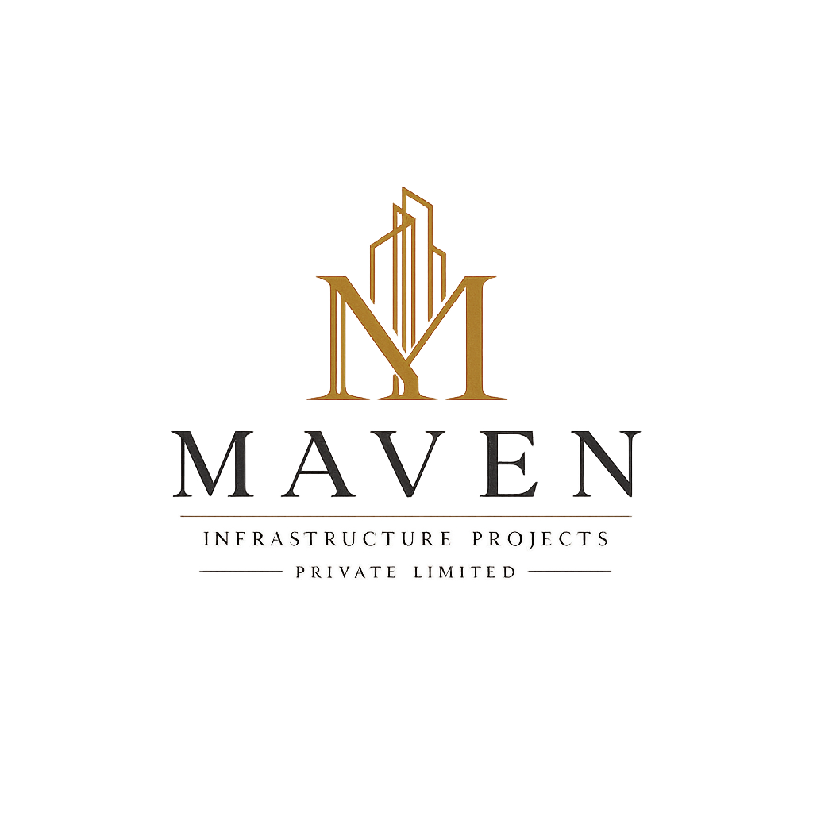
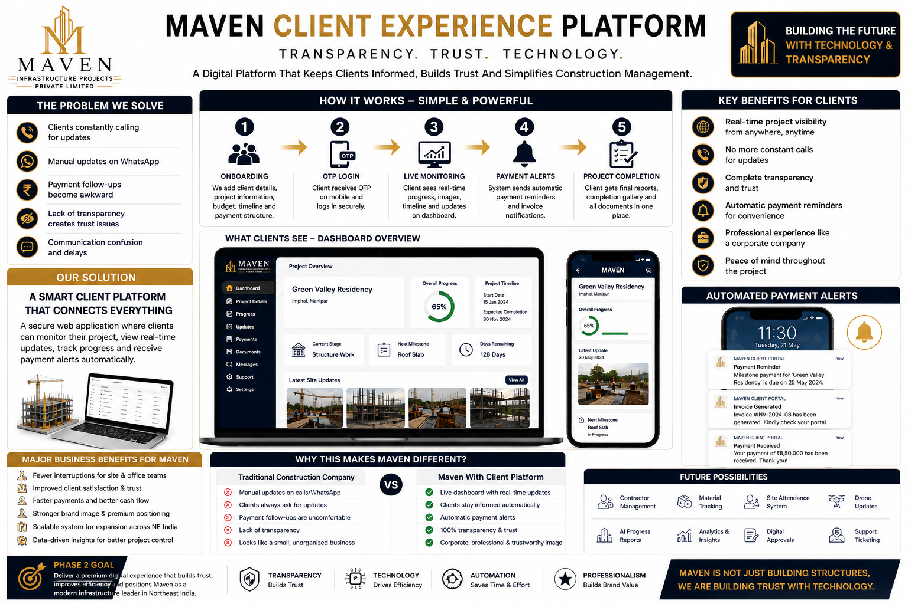

Maven Infrastructure Projects Pvt. Ltd.
A website is not an online brochure. It is Maven’s corporate identity, market signal, and expansion engine for Northeast India.

Without a strong website, Maven may look smaller than it really is.
Even capable infrastructure companies can appear local or informal when their online presence is weak.
Large clients, partners, vendors, and institutions check digital presence before taking a company seriously.
If Maven is expanding beyond Manipur, the market must see that ambition clearly and professionally.
Maven should not be presented as a construction business anymore.
The new message: Maven is a professionally managed infrastructure company building across Northeast India.
| Old perception | Local contractor or small business |
| New perception | Corporate infrastructure company |
| Old proof | Word of mouth and WhatsApp |
| New proof | Projects, portfolio, services, leadership and expansion roadmap |
The website becomes Maven’s digital head office.
It makes Maven look structured, serious, reliable and ready for larger clients.
It shows that Maven is growing from Manipur into a wider Northeast market.
It converts visitors into inquiries from developers, institutions, architects and partners.
Own the regional infrastructure story before competitors do.
Maven has a natural advantage: it is based in Manipur and understands the region. The website should turn that into a corporate strength.
Build a website that proves scale, not just presence.
Premium first impression with strong corporate positioning.
Company story, leadership vision, values and Northeast mission.
Infrastructure, civil works, construction management, commercial projects and consultancy.
Completed and ongoing work with images, scale, location and project category.
Dedicated page showing Maven’s growth from Manipur into the Northeast.
A hiring page makes the company look structured, growing and corporate.
Launch the website as a market positioning campaign.
Corporate identity
Website, logo discipline, company profile, Google Business and project photography.
Authority content
LinkedIn updates, project posts, site progress visuals and leadership messages.
Regional SEO
Rank for infrastructure and construction searches across Manipur and Northeast India.
Lead conversion
Inquiry forms, WhatsApp CTA, project consultation requests and partner contact paths.
Where the website should create business value.
Google Search
Target people actively searching for construction and infrastructure companies in Manipur, Assam and Northeast India.
Build corporate credibility through project milestones, hiring posts, expansion updates and leadership communication.
WhatsApp Conversion
Use the website to move serious visitors into direct conversations with Maven’s business development team.
Project Portfolio
Use completed and ongoing projects as proof that Maven is capable of larger regional work.
A premium website changes how the market treats Maven.
Corporate clients are more likely to speak to a company that looks organized and reliable.
A professional digital presence strengthens credibility during formal evaluation.
Partners and investors understand Maven’s scale, vision and growth direction faster.
Engineers, managers and staff prefer companies that look stable and ambitious.
Maven can position itself as a Northeast-focused infrastructure company.
The website answers basic trust questions before the first meeting.
Maven’s website should be built as a corporate transformation platform, not a simple company profile.
It should prove that Maven is Manipur-based, professionally managed, expanding across Northeast India, and ready to operate as a serious infrastructure company.
